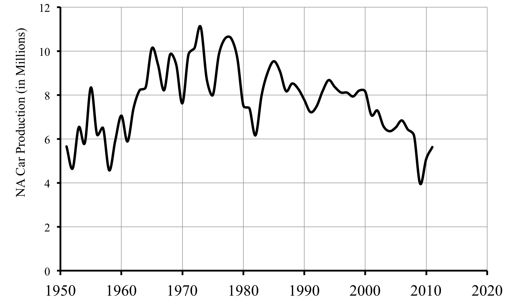
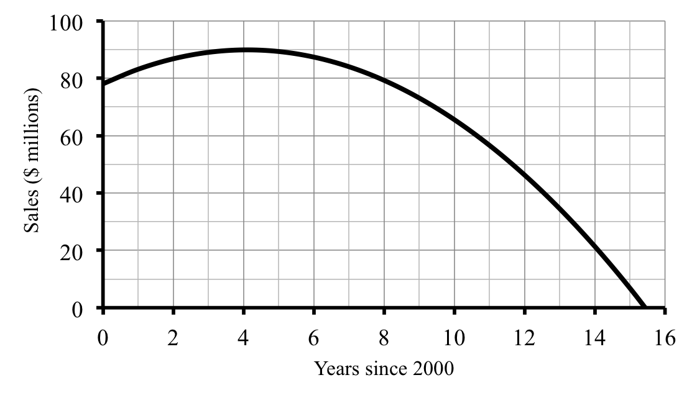

Relax. You have done problems like these before. Even if these problems look a bit different, just do what you can. If you’re not sure of something, please ask! You may use your calculator. Please show all of your work and write down as many steps as you can. Don’t spend too much time on any one problem. Do well. And remember, ask me if you’re not sure about something.
As you work, make a “don’t forget” list of any information you need to look up or ask about.
Caution: These review exercises do not include every possible problem you might be asked on a final exam. For example, there are no problems here from Sections 1.5, 2.5, 3.5, 4.5, or 5.5, so be sure to ask your instructor which of those sections are going to be on your final exam.
1.
The graph shows the number of cars produced in North America (in millions/year) during 1951-2011. 1
Source: Ward’s Automotive Yearbooks

(a)
Identify the variables, including units and dependence.
The problem continues ...
(b)
Approximately when did North American car production first pass 9 million/year? Indicate the corresponding point on the graph.
(c)
In which year were the most cars produced? Again, also indicate the point.
(d)
Best as you can tell from your graph, what might be a reasonable estimate of North American car production in 2015? Just guess to the nearest million/year.
(e)
Calculate the rate of change from 1958 when production was 4.57 million cars/year to 1971 when it was 9.83 cars million/year. What does that tell you about North American car production during 1958-1971?
(f)
Now calculate the rate of change of from 1984 when production was 9.03 million cars/year to 2006 when it was 6.84 million cars/year. What does that tell you about North American car production during 1984-2006?
2.
Sarah and Koal are bringing a large basket of stuffed animals to the crisis nursery as gifts for the children. They estimate it will cost $\(T\) for \(S\) stuffed animals where
\begin{equation*}
T = 39.99 + 6.95S
\end{equation*}
(a)
Make a table showing the cost if Sarah and Koal include 10, 20, or 40 stuffed animals.
(b)
Included in the cost is a new toy box for the animals. What does it cost?
(c)
What does the 6.95 represent and what are its units?
(d)
Draw a detailed graph, starting at 0.
The problem continues ...
(e)
If Sarah and Koal spent $262.39, how many stuffed animals were in the toy box they gave to the crisis nursery? Show how to set up and solve an equation to answer the question.
My favorite little black dress is machine washable. Unfortunately each time I wash it the color fades a little. The intensity of black color remaining, \(B\text{,}\) is a function of the number of times I have washed the dress, \(W\text{,}\) according to the equation
It will still look new as long as the intensity stays above 90%. Set up and solve an equation to figure out how many times I can wash the dress and keep it looking new. Then check some other way.
(b)
By the time only 75% of the color remains, the dress will look too faded to wear formally. How many washes before then? Find the answer to the nearest number of washes by any method you prefer.
(c)
Draw a graph showing how the color of my favorite little black dress fades.
4.
Brock is working as the equipment manager at a local gym. They need to replace several weight machines. One option will cost $475 per month to rent the machines plus a delivery/removal fee of $300. The other option is to buy the machines for $23,600 and pay $92/month for a service contract.
(a)
Name the variables and write an equation for each option.
(b)
What should Brock recommend if they plan to have the machines for 3 years?
(c)
Set up and solve a system of equations to determine when the options cost the same.
(d)
What does the answer tell Brock?
5.
Dwight’s company was doing great business in 2000, but a few years later sales began to drop, and have only gotten worse. Their sales $\(S\) in millions \(T\) years from 2000 is given by the following equation
\begin{equation*}
S = 78.1+5.75T-0.7T^2
\end{equation*}

(a)
According to this equation, what were the company’s sales in 2000, 2004, 2009? You may confirm your answers with the graph, but use the equation to calculate.
(b)
The company decided to declare bankruptcy when sales fell below $10 million. In what year was that? Find the answer to the nearest year, showing work to justify your answer. Also, indicate the point on the graph where you can check. You may use successive approximations or the appropriate formula.
6.
Infants are regularly checked to make sure they are growing accordingly. The World Health Organization publishes growth charts to evaluate infant weight \(W\) in kilograms at a given age \(A\) in months since birth (for up to three years). An equation that describes an average infant boy is the following:
Hint: first convert to pounds. Then convert just the decimal part to ounces.
7.
Gail calculated that number of pieces of fudge \(F\) she can cut from a square that is \(D\) inches on each edge is given by the formula
\begin{equation*}
F=1.5625\, D^2
\end{equation*}
(a)
Make a table showing the number of pieces of fudge from a square with edge: 5 inches, 10 inches, and 2 feet. Include the value for a 0 inch square too.
(b)
Draw a graph showing how the number of pieces of fudge depends on the length of the edge of the square.
(c)
According to your graph, approximately what size square should Gail make if she wants 200 pieces of fudge?
(d)
Now set up and solve an equation to find the answer to the nearest one decimal place.
8.
In 2000 there were an estimated 20,851,820 Texans. The population of Texas has grown around 1.89% per year since then. 2
Source: United States Census Bureau
(a)
Name the variables and write an equation relating them.
(b)
According to your equation, what was the population of Texas in 2010?
(c)
The U.S. Census Bureau counted 25,145,561 Texans in 2010. Does that mean the actual growth rate was slightly more or slightly less than 1.89%? Explain.
9.
Ericson has been lifting weight for the past 12 weeks. He has increased his curl weight by about 1.5 pounds per week and is up to 30 pounds.
(a)
What weight could Ericson curl 12 weeks ago?
(b)
Name the variables and write a linear equation relating them.
(c)
At this rate when will Ericson be able to curl his goal of at least 45 pounds? Set up and solve an inequality.
10.
In the United States in 1970, the average person ate 2,169 calories per day. By 2008 that number had increased to 2,674 calories per day. 3
Source: United States Department of Agriculture
Let \(C\) be the amount a typical person eats (in calories per day) and \(T\) the number of years since 1970. Compare what the linear and exponential models project for the years 2015 and 2030. Include both equations and a graph showing both functions on the same axes.